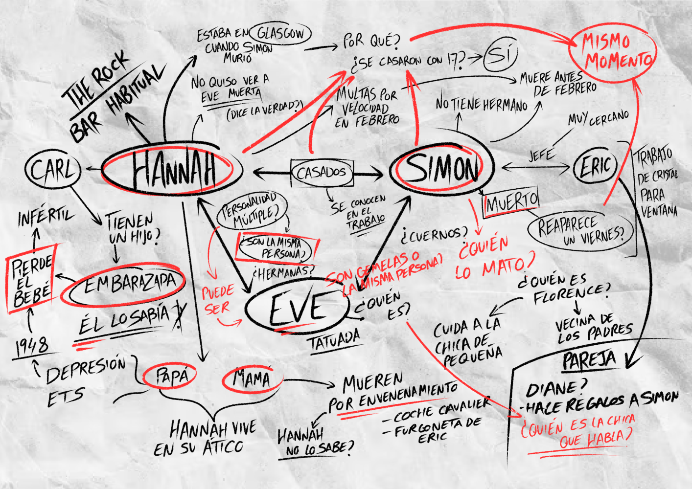

A story told in pieces
Her Story is a story told in pieces. The game is presented to the player as a police search engine, in which you have access to lots of short videos representing unorganized pieces of some interrogations of a woman about a murder and depending on the search terms you introduce, some videos are shown to you. That’s the key point, the story is given to you in pieces, and it’s your job to put it all together and assemble the story in your head.
Dozens and dozens of videos without an apparent order
Sincerely, I started playing ‘Her Story’ because I’m such a fan of narrative games and this was sold to me as that.
What I did not expect was to find that the main gameplay was based around watching videos.
Dozens and dozens of videos without an apparent order or sense.
The truth is that I started to watch the videos as they appeared, without any particular order.
Names, dates and places that I did not know and did not tell me anything about anything were mentioned.
That’s when the search function came into play. I decided to pick up a sheet of paper and write down all the names that seemed more relevant to me when I heard them in the videos (pure “Do not feed the monkeys” style), the ones which seemed more important to the story or were repeated many times.
In my head, I thought it was logical that if a word was repeated a lot it would be key to the story but.
What if it wasn’t? I wrote down all the unresolved questions near each of the names, making notes and writing words down so I didn’t forget to search them later in the video searcher.
"That was the most magical part of ‘Her Story’ to me: when you are the one who makes up the story, so what you think about it is correct for you."
Nonlinear storytelling based on ambiguity
That was the most magical part of ‘Her Story’ to me, and what constitutes nonlinear storytelling, based on ambiguity, when nobody confirms or denies if you are on a right path to a conclusion, if what you are thinking is correct or not, or if you have misunderstood a video. Maybe a quote you thought meant nothing gains new meaning all of a sudden when you later watch a video that opens up a new possibility. Even after all the conclusions you may think, nobody will tell you if they are correct or not. Maybe you have already watched all the videos and even then you haven’t still figured out the whole story and the resolution of the murder, because that’s when this type of narrative comes to shine, when you are the one who makes up the story, so what you think about it is correct for you.

I felt like a true detective
Little by little, my paper sheet became full with notes until it ended up as seen in the photo below and when I noticed I couldn’t help but think about the experience I felt during the 2 hours that it took me to play it whole. It was something that had never happened to me before. I felt like a true detective, who set the case as concluded when I could think of a story that, for me, made sense. After this I searched the web for videos and articles about the game and its ending and I found out that the story did not even have an “oficial” resolution, so that was when I cataloged ‘Her Story’ as one of the best examples of immersion and nonlinear storytelling that I have ever played.